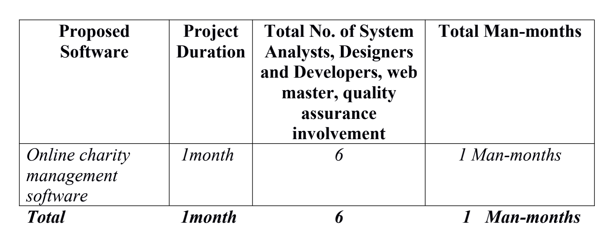

Our Project Proposal
1. PROBLEM HISTORY
Our customer, Charity-Global is currently managing the donations to coordinate the amount to be given as donations by using a manual system. To run the activities successfully, they are required to do the manual registration. The list of the philanthropists along with their donations are done manually using forms, logbooks and registers. This leads to numerous problems, as information sharing becomes slow, difficulties in making quick brief summary reports, difficulty to manage a large queue of volunteers, also having problems in applicants and members management etc. Our customer wants a software solution to this problem.
2. PROBLEM STATEMENT
The donation registration is a primary task for the Charity-Global. Here, the important issue is the applicant’s management and donation management process. It is a difficult task to manage and fill-up a form for applicants to donate and the donation amount manually. They are numerous ways to solve this issue using software system and applicants can register quickly rather than manual system. In the manual applicant registration system, there are many redundant of works by keeping the same record in members or volunteers profile. By using software system, it is possible to reduce these redundant works and accelerate the activities. They also found difficulties in member’s management task. A member management software system can easily these artifacts and all the members’ information properly. At this charity organization, there are several activities where our customers are facing difficulties like how the volunteers can register themselves, how the applicants can register themselves, how the members can donate by logging into their id, how the donation amount is managed and how the admin works. These all tasks can be made easy for our customers using the software. They also need proper guideline and suggestion about the hardware requirement and network architect as per software system requirement. Hardware requirement and network architecture will be suggested considering their existing hardware equipment and network architecture.
(2.1) Scope Of The Project
The scope of the project is mainly to focus on the organization’s applicant management and their donations along with volunteers, members and administration management.
(2.2) Scope Of The Project
The user of this software are the members, new applicants, volunteers and the administration.
(2.3) Proposed Software feature
Database :
MySQL database Server – OS: UNIX/ LINUX/WINDOWS etc.
Technology Use :
PHP, Laravel, MySQL, Ajax, JavaScript, HTML5, CSS3, Bootstrap5
Other Features :
a) Web-based, b) User Friendly, c) Reduce Redundant Works, d) Faster & Efficient
3. PROPOSAL
(3.1) Technical Proposal :
List of Professionals involvement in the project -
4. DIAGRAMS
CLass Diagram :

Sequence Diagram One :
Sequence Diagram Two :

5. WORK PLAN
Our team, which is full of experienced project workers, has made the planning and divided the tasks into individual fragments for faster and efficient result.
Work Division :
(1) Project Leader and Core Programmer: Abu Hurayra Uchchas His Main task is to manage the project work altogether and code for the same.
(2) Asisstant Programmer: Abul Kalam His work is to assist the core programmer for coding the software.
(3) System Designer: Amira Mostafa Chowdhury Her main job is to identify the problems occurring during the development of the software and finding an effective solution.
(4) Web Master: Satodhru Das His job is to layout the webpage and updating it from time to time as the project progresses.
(5) Tech. Report Writer: Fariya Tanjin and Zeesan Mahbub Chowdhury Both of them were assigned the task to give the project proposal.
6. PROJECT BOUNDARIES AND DELIVERY
(6.1) Project Boundary
This project only enables registration of new applicants. It had fixed user id and password, which can be distributed, to the members after their membership. The organization can also donate after logging into their id. The volunteers are also registered into volunteers’ lists.
(6.2) Project Limitations
i. This project does not contain any realistic payments methods.
ii. The members and volunteers do not have much profile details such as their photograph or identifications.
iii. The user name and password are fixed.
iv. The project needs more development for real life usage.
v. The use of basic security is done.
(6.3) Project Delivery
Online Charity Management System Project.
Delivery Date: 27/06/2021